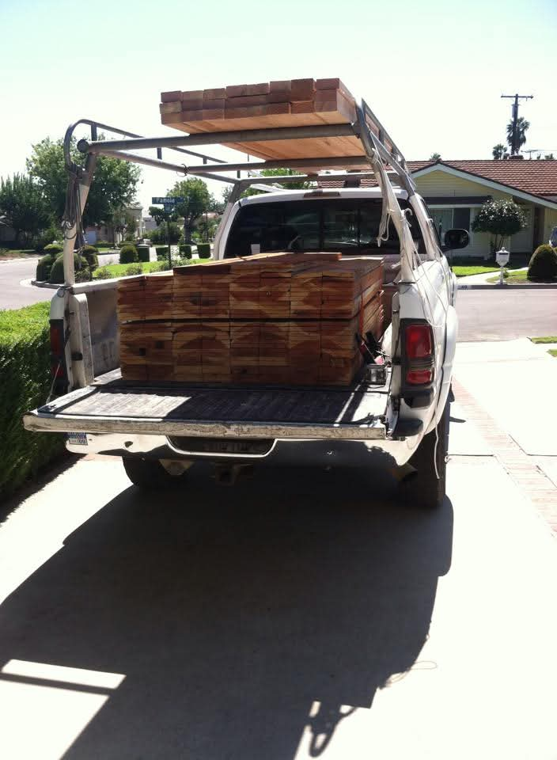
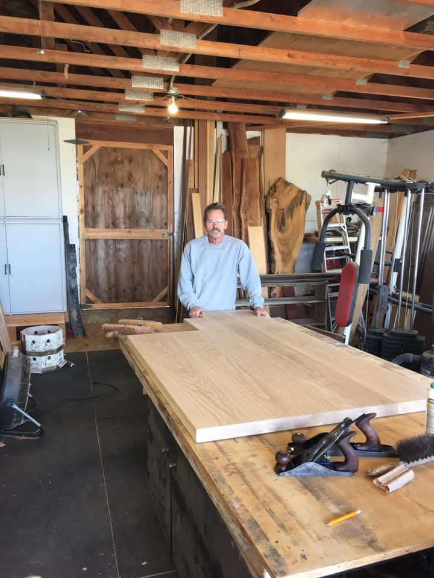
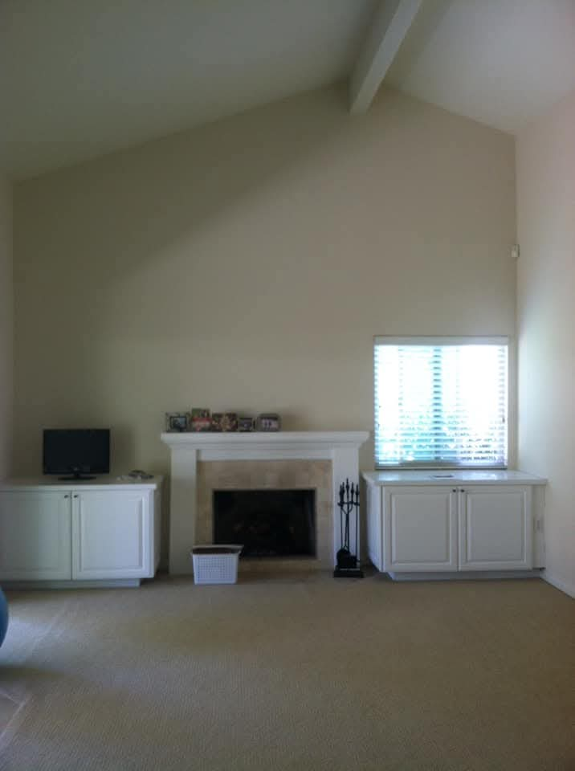
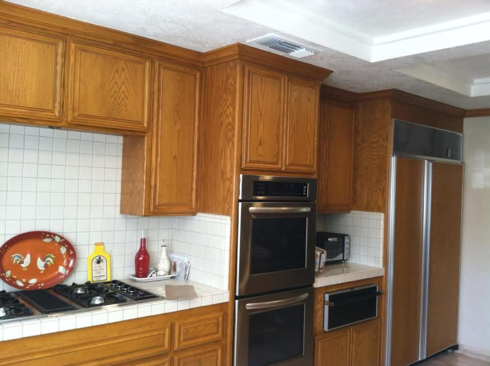
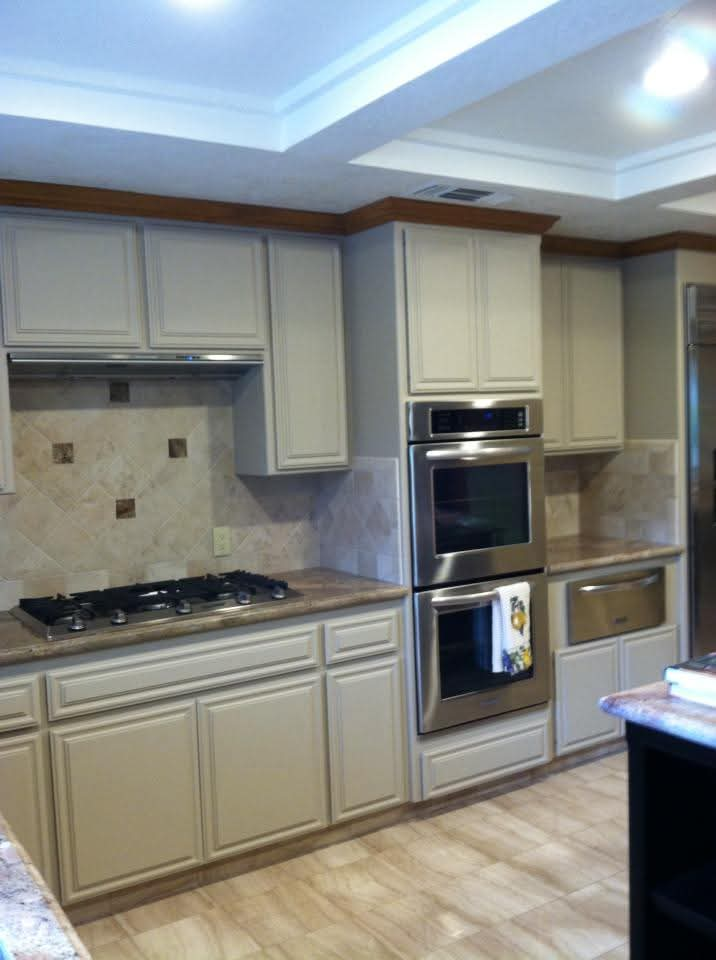
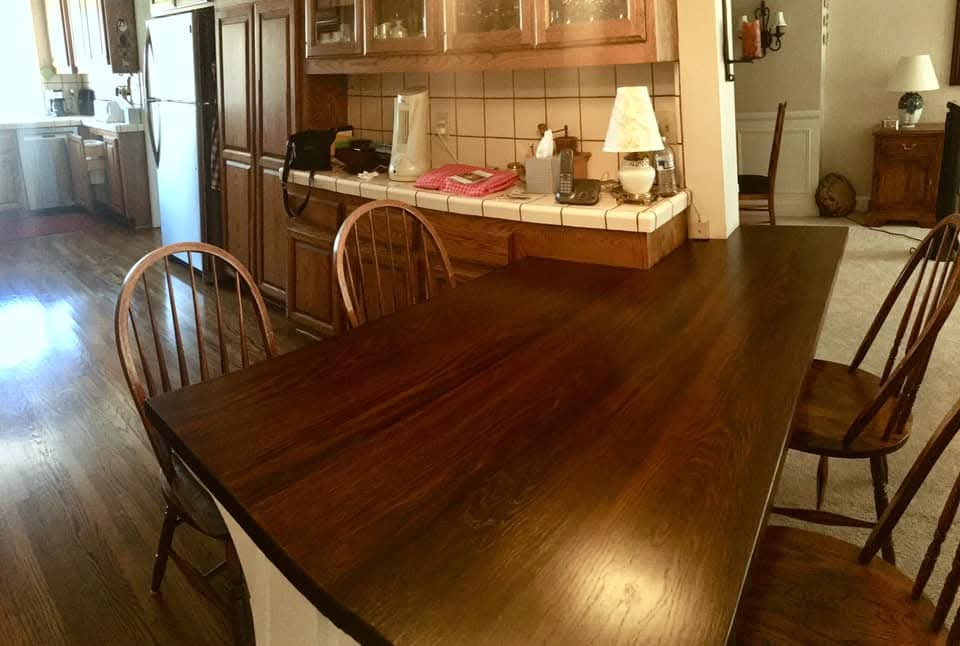
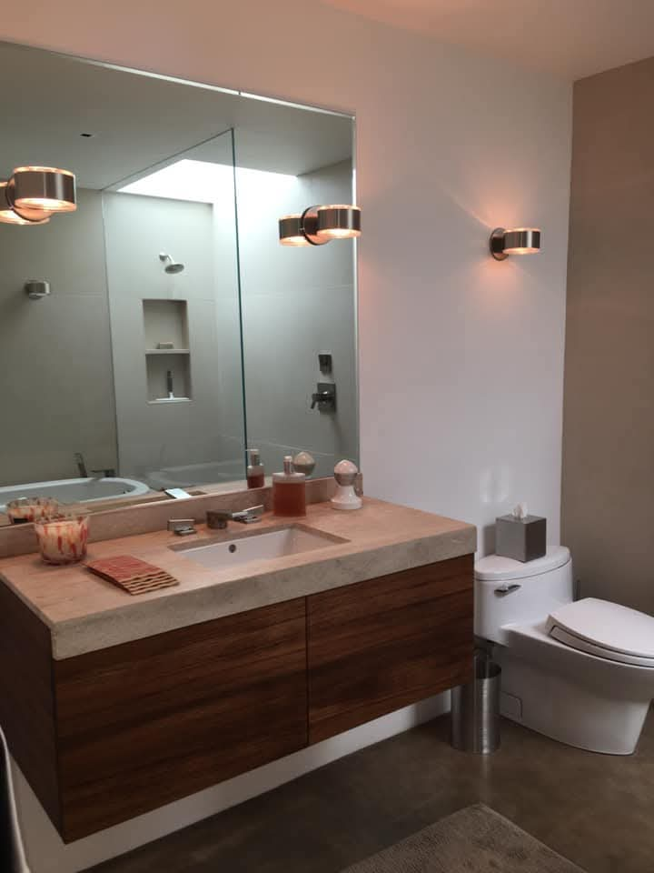
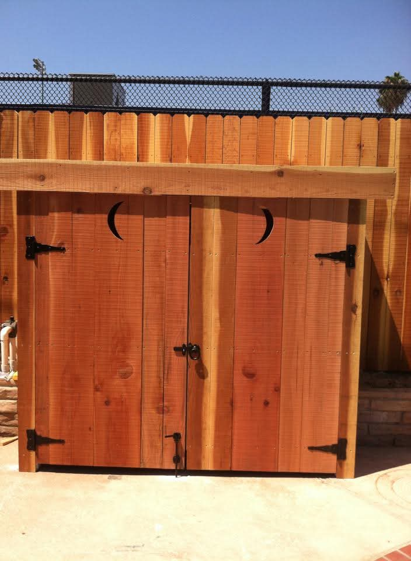
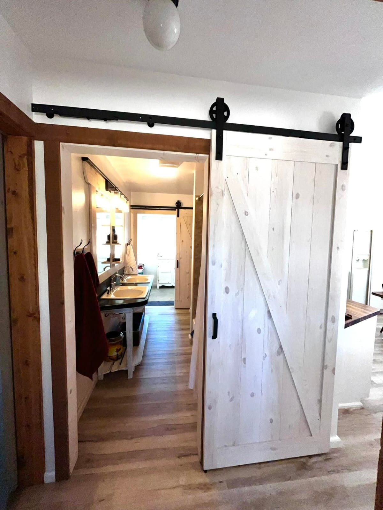
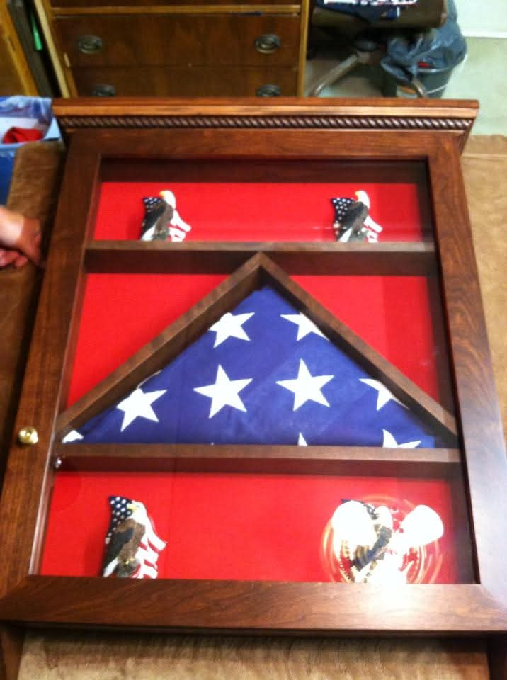

01 / Custom woodwork
Measured and finished for the room.
Counters, tables, shelves, specialty pieces, and wood details that should look built for the house, not dropped into it.

How the site should sell him
The site should show that Mark is not selling commodity labor. He is selling judgment, patience, and the ability to make custom pieces belong in a real home.
01 / Look closeDetails carry the trust. Edges, hardware, wood grain, shelves, counters, and fireplace work should get close-up treatment instead of hiding inside generic room photos.
02 / Range without scatterThree lanes keep it focused. Custom woodwork, kitchens and built-ins, and home improvements give enough range without turning the site into a catch-all handyman menu.
03 / Make Mark realThe shop photo matters. A real working image does more for credibility than stock photos, badges, or over-written marketing language.




Project gallery
The Projects page is already included. Tomorrow's job is not deciding whether we need one. It is deciding which projects deserve full pages once Mark supplies the better originals.







